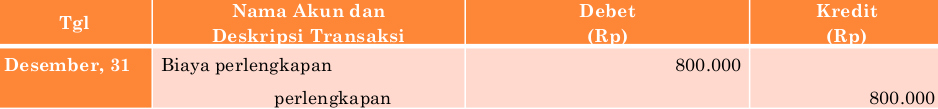
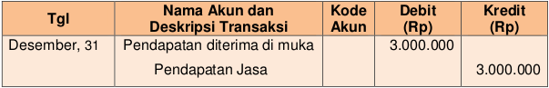
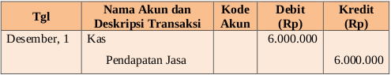

Contoh transaksi:
Tanggal 1 Desember 2017 Perusahaan menerima uang dari Tuan Yoga sebagai pembayaran jasa yang akan dilakukan selama 6 bulan kedepan senilai Rp6.000.000,00.
Pencatatan menggunakan pendekatan Neraca
Namun, sampai tanggal 31 Desember 2013 (yaitu pada saat penyusunan laporan keuangan) perusahaan telah mengerjakan pekerjaan selama 3 bulan (1 Desember-31 Desember 2017) dari total 6 bulan yang menjadi tanggung jawabnya sehingga sudah boleh mengakui pendapatan Rp3.000.000,00 yang berasal dari Rp6.000.000,00/6 x 3 bulan. Sehingga jurnal penyesuaiannya akan adalah sebagai berikut:
Pencatatan menggunakan pendekatan Laba/rugi
Namun, sampai tanggal 31 Desember 2017 (yaitu pada saat penyusunan laporan keuangan) perusahaan telah mengerjakan pekerjaan selama 3 bulan (1 Desember -31 Desember 2017) dari total 6 bulan, sisanya masih 3 bulan.
Sehingga jurnal penyesuaiannya akan adalah sebagai berikut: